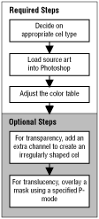

The figure below illustrates the steps in creating a 3DO cel.
For examples using the required steps, return to Working With 3DO Cels. For examples of the optional steps, see Using Transparency and Special Effects.

Figure 3: Steps in creating a 3DO cel.